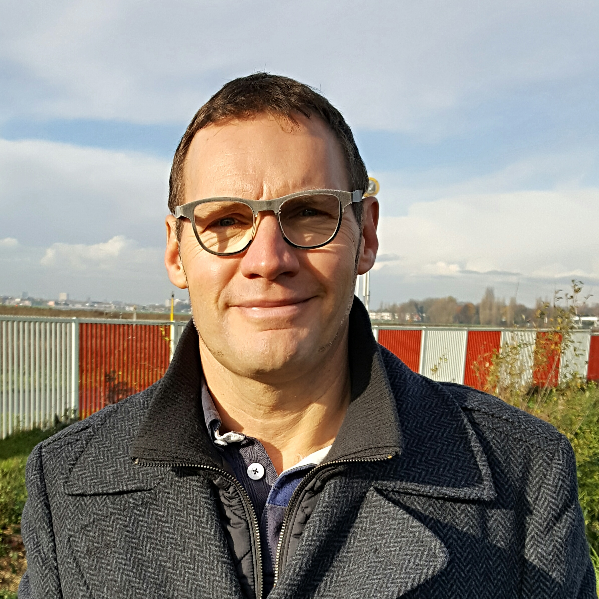

Bio
Werner DE VOS est titulaire d'un Master en ingénierie mécanique et électrotechnique de la Vrije Universiteit Brussel.
Avant de fonder COGITANDUS, il a acquis plus de 25 ans d'expérience dans le domaine de la sécurité, de la qualité et de l'environnement en tant que responsable Groupe pour des sociétés qui opèrent à l'échelle mondiale dans divers secteurs industriels.
De la définition d'une stratégie à l'accompagnement des équipes internationales pour sa mise en œuvre dans l'organisation à la mise en place et à l'audit des systèmes de management ISO / OHSAS & VCA et à la réalisation de l'amélioration continue.